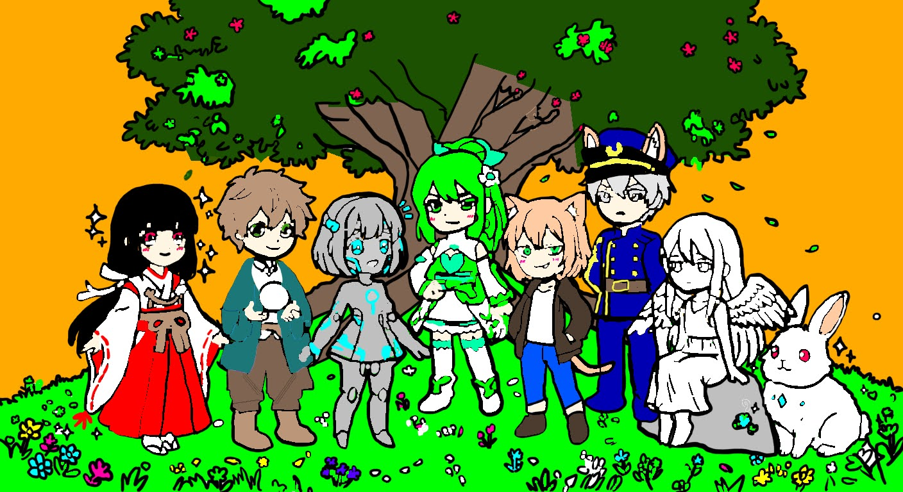

創作物の宝物庫 - PROGRAMエリア

ここでは、PROGRAMを見て頂きます
興味を持っていただけると幸いです
企画: しらのん / mainクリエイター: 羽丘・ロディーネ・萌枝 / subクリエイター: 佐々木麗良
サーバープログラマー: 宮下=ペスカドール=陽菜 / エリア管理者: アリア・プラムログ
Supported by Chiffon
興味を持っていただけると幸いです
企画: しらのん / mainクリエイター: 羽丘・ロディーネ・萌枝 / subクリエイター: 佐々木麗良
サーバープログラマー: 宮下=ペスカドール=陽菜 / エリア管理者: アリア・プラムログ
Supported by Chiffon
【数当てゲーム】
概要：0~9の数を5回のチャンスで当てて頂きます。
ポイント：コンピュータが指定した数字を当てるシンプルなもののヒント無しでは難しいです。ランダム、分岐、ループ、表示、標準入力等を駆使することで構成されています。CUIのみの実装となります。
感情を含む用語演算変換クイズ
概要：感情を含む用語一覧から用語を選んでクイズの回答を入力するものです。詳しい取り扱い方は取扱説明書を読んでください！
ポイント：メソッドや配列、ループ、分岐、変数、表示等を駆使して作成されています。GUI実装成功したのでWEB版解禁となります!用語は感情関連が多く配置されています。演算能力が要求されます!腕の立つ方は試してみてください。Java版も完成していますので、そちらも是非遊んでみてください。
言葉演算
概要：言葉を演算して対象の言葉を答えるクイズゲームです。
ポイント：このゲームはチュートリアルがあるのでそこから取り組むことをお勧めします。難易度は12つ。一つの難易度につき５問。制限時間は難易度によって異なります。時間内に正解できなければ身代わり人形を一つ失います。人形をすべて失ったらゲームオーバーです。心して遊びましょう。感情を含む用語演算変換クイズをアップグレードして、CUIとGUI双方が実装されています!演算能力が要求されます。腕の立つ方は試してみましょう！
使用言語: Java, CSS, HTML, JavaScript